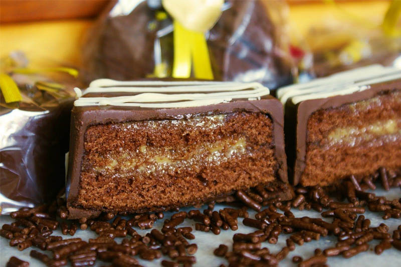

Pão de mel:
Ingredientes
- 1 colher de sobremesa de bicarbonato de sódio
- 1 colher de café de canela em pó
- 1 colher de café de cravo em pó
- 1/2 xícara de chá de mel
- 1 e 1/2 xícara de leite (temperatura morna)
- 3 xícaras de chá de farinha de trigo
- 1 xícara de chá de açúcar
- 1/2 xícara de chá de chocolate em pó
- 1 barra de chocolate

Modo de preparo
- Em uma vasilha, peneire os ingredientes secos (canela e cravo em pó, farinha de trigo, chocolate em pó, açúcar e bicarbonato de sódio) e misture bem.
- Coloque o mel e o leite morno na mistura e mexa bem na mão, sem usar batedeira. Reserve.
- Unte a forma (se tiver forma própria para pão de mel, melhor) com manteiga e leve ao forno pré-aquecido a 200ºC por aproximadamente 20 minutos.
- Retire do forno, espere esfriar e desenforme.
- Para o recheio, use doce de leite. Passe entre duas metades, como se estivesse fazendo um sanduíche.
- Derreta o chocolate em banho maria, e mergulhe os pães de mel nele.
- Espere a casca de chocolate esfriar, proteja seus doces e boas vendas!